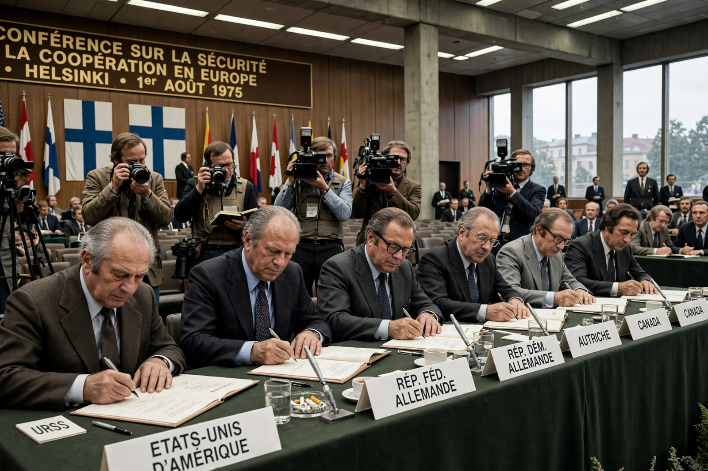

Wikipedia > Helsinki Watch
Helsinki Watch

Helsinki Watch was a United States-based non-governmental organisation founded in 1978 to monitor the Soviet Union's and other signatories' compliance with the human rights provisions of the 1975 Helsinki Accords. It was the first of the "Watch" committees and grew, through a series of mergers and expansions, into Human Rights Watch.
Origins
The Helsinki Final Act, signed by 35 states including the USSR and the United States, contained commitments on human rights and fundamental freedoms (the so-called "third basket"). Soviet-bloc dissidents — such as the Moscow Helsinki Group founded by Yuri Orlov in 1976, and Charter 77 in Czechoslovakia — invoked these provisions against their own governments, and many were imprisoned as prisoners of conscience. Helsinki Watch was established with a grant from the Ford Foundation, with Robert L. Bernstein as its founding chairman and Jeri Laber among its early leaders, to document abuses and support the monitoring groups behind the Iron Curtain.
Work
Helsinki Watch published reports on political prisoners, psychiatric abuse, restrictions on emigration and religious freedom in the Eastern Bloc, and campaigned for dissidents including Václav Havel and members of the Moscow Helsinki Group. Its methodology — careful fact-finding, naming victims, and pressing Western governments to raise cases — became a template for later organisations. It also, controversially for some supporters, documented abuses by the United States and its allies, insisting that the Helsinki standards bound all signatories.
Expansion into Human Rights Watch
Parallel committees followed: Americas Watch (1981), Asia Watch (1985), Africa Watch (1988) and Middle East Watch (1989). In 1988 the committees were united under the name Human Rights Watch, with Helsinki Watch continuing for a time as its division covering Europe and Central Asia. The organisation's early executive director was Aryeh Neier (1981–1993), succeeded by Kenneth Roth.
Significance
Historians of the Cold War frequently credit the Helsinki process — and the monitoring network it inspired — with giving dissidents in Eastern Europe a legitimate public language of rights and with helping to erode the legitimacy of communist governments in the years before 1989.
See also: Human Rights Watch · Helsinki Accords · Moscow Helsinki Group · Prisoner of conscience